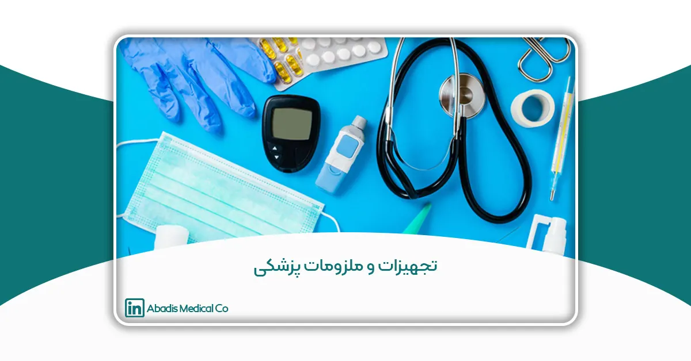

مقدمه
تجهیزات پزشکی و ملزومات بیمارستانی، به عنوان جز اصلی مراقبتهای بهداشتی مدرن، نقش مهمی در تشخیص، درمان و مدیریت بیماریها ایفا میکنند. از دستگاههای پیشرفته تشخیصی مانند اسکنرهای MRI گرفته تا لوازم مصرفی مانند کیسه ساکشن یکبار مصرف و دستکش در این دسته قرار میگیرند. این ابزارها باعث بهبود کارایی و ایمنی خدمات درمانی میشوند.
صنعت تجهیزات پزشکی و تولید ملزومات مصرفی بیمارستانی، از جمله تولید کیسه ساکشن یکبار مصرف آبادیس، در دهههای اخیر به دلیل پیشرفتهای فناورانه و افزایش تقاضای جهانی، رشد چشمگیری داشته است. در این مقاله، دستهبندیهای مختلف تجهیزات پزشکی و لوازم مصرفی بررسی شده و اهمیت آنها در ارتقای کیفیت خدمات بهداشتی مورد بحث قرار میگیرد.
تجهیزات پزشکی و ملزومات مصرفی بیمارستانی چیست؟
تجهیزات پزشکی به دستگاهها و ابزارهایی گفته میشود که برای اهداف درمانی یا تشخیصی طراحی شدهاند. این تجهیزات شامل دستگاههای تصویربرداری پزشکی مانند MRI، تجهیزات جراحی، و دستگاههای پیشرفته مانند دستگاه دیالیز میشوند.
در مقابل، ملزومات پزشکی، اقلام مصرفی و یکبار مصرفی هستند که در بیمارستانها و مراکز درمانی استفاده میشوند. این ملزومات شامل محصولاتی مانند دستکش، سرنگ، بانداژ و کیسه ساکشن یکبار مصرف است. این محصولات به طور مستقیم به بهداشت و پیشگیری از عفونت کمک میکنند و در فعالیتهای روزمره پزشکی نقش حیاتی دارند.
اهمیت تجهیزات و ملزومات پزشکی
تجهیزات پزشکی و ملزومات مصرفی نقش اساسی در بهبود کیفیت خدمات درمانی دارند:
- تشخیص دقیقتر: استفاده از سیستمهای تصویربرداری پیشرفته مانند سونوگرافی و MRI به پزشکان اجازه میدهد مشکلات داخلی بدن را بدون روشهای تهاجمی تشخیص دهند.
- درمان کارآمدتر: ابزارهایی مانند پمپ تزریق و لیزرهای جراحی درمانهای دقیقتری ارائه میدهند.
- ارتقای ایمنی بیمار: ملزوماتی مانند کیسه ساکشن یکبار مصرف، خطر عفونت و انتقال بیماری را کاهش میدهند.
- کاهش استرس کارکنان پزشکی: تجهیزاتی مانند مانیتور بیمار و دستگاههای خودکارسازی، وظایف کارکنان را سادهتر کرده و دقت کار را افزایش میدهند.
کیسه ساکشن یکبار مصرف: محصولی کلیدی در تجهیزات بیمارستانی
کیسههای ساکشن یکی از مهمترین لوازم مصرفی در بیمارستانها و مراکز جراحی هستند. این کیسهها برای جمعآوری ترشحات و مایعات بدن بیماران در طول عملهای جراحی و دیگر پروسههای درمانی استفاده میشوند. استفاده از کیسههای ساکشن یکبار مصرف:
- بهداشت و ایمنی را تضمین میکند.
- خطر انتقال عفونت را کاهش میدهد.
- باعث تسهیل فرآیندهای درمانی میشود.
آبادیس بهعنوان یکی از تولیدکنندگان کیسه ساکشن در ایران، تلاش ما در ارائه محصولاتی با کیفیت بالا و مطابق با استانداردهای جهانی است.
تجهیزات پزشکی و ملزومات مصرفی، از جمله کیسه ساکشن یکبار مصرف، نقشی حیاتی در ارائه خدمات بهداشتی دارند. ارتقای این ابزارها به لطف پیشرفتهای فناوری و تخصص مهندسان زیستپزشکی، راه را برای خدمات بهتر و نتایج درمانی مطلوبتر هموار کرده است.
دستهبندی تجهیزات پزشکی: بررسی انواع و کاربردهای آنها
تجهیزات پزشکی و ملزومات آنها از ارکان اصلی سیستمهای بهداشتی و درمانی در سراسر جهان هستند. این ابزارها بسته به عملکرد و کاربردشان در محیطهای درمانی و بیمارستانها، به دستههای مختلفی تقسیمبندی میشوند. دستهبندی دقیق تجهیزات پزشکی نهتنها کمک به بهبود کارایی و دقت در ارائه خدمات درمانی میکند، بلکه تضمین میکند که متخصصان بهداشت و درمان بتوانند ابزار مناسب برای تشخیص، درمان، پایش و حمایت از بیمار را بهطور مؤثر انتخاب کنند. در این مقاله، به تفکیک انواع اصلی تجهیزات پزشکی پرداخته میشود:
۱. تجهیزات تشخیصی پزشکی
تجهیزات تشخیصی به پزشکان و متخصصان کمک میکنند تا بیماریها و مشکلات پزشکی را با دقت بالا شناسایی کنند. این تجهیزات قادرند ساختارهای داخلی بدن را بدون نیاز به جراحی و بهصورت غیرتهاجمی بررسی نمایند.
نمونهها:
- سیستمهای تصویربرداری پزشکی: دستگاههای اشعه ایکس، سیتی اسکن (CT)، سیستمهای تصویربرداری MRI، و دستگاههای اولتراسوند.
- تجهیزات آزمایشگاهی: آنالیزورهای خون، سانتریفیوژها و میکروسکوپهای پزشکی.
- ابزارهای تشخیصی تخصصی: دستگاههای الکتروکاردیوگرام (ECG) و اسپیرومترها.
این تجهیزات تشخیصی برای شناسایی مشکلات قلبی، تنفسی، و دیگر اختلالات داخلی ضروری هستند و نقشی کلیدی در تشخیص زودهنگام دارند.
۲. تجهیزات درمانی
تجهیزات درمانی برای درمان انواع بیماریها و پشتیبانی از فرآیند بهبودی بیماران طراحی شدهاند. این دستگاهها معمولاً در محیطهای درمانی، بیمارستانها و بخشهای مراقبتهای ویژه بهکار میروند.
نمونهها:
- پمپهای انفوزیون: برای تحویل کنترلشده داروها یا مایعات.
- ونتیلاتورها: کمک به بیمارانی که دچار مشکلات تنفسی هستند.
- دستگاههای دیالیز: برای تصفیه خون بیماران مبتلا به نارسایی کلیه.
۳. ابزار و تجهیزات جراحی
تجهیزات جراحی برای انجام عملیاتهای دقیق و پیچیده در اتاقهای جراحی استفاده میشوند. این ابزارها باید بهگونهای طراحی شوند که دقت بالا و ایمنی را برای بیمار فراهم کنند.
نمونهها:
- ابزارهای جراحی پایه: شامل اسکالپلها، پنسها و قیچیهای جراحی.
- تجهیزات پیشرفته: دستگاههای الکتروجراحی، سیستمهای جراحی رباتیک، و تجهیزات جراحی لیزری.
۴. تجهیزات پزشکی بادوام (DME)
تجهیزات پزشکی بادوام برای استفادههای مکرر طراحی شدهاند و بهویژه برای کمک به بیماران در مدیریت شرایط مزمن یا بهبود کیفیت زندگی مفید هستند.
نمونهها:
- وسایل کمک حرکتی: ویلچرها، واکرها و عصاها.
- اثاثیه بیمارستانی: تختهای بیمارستانی قابل تنظیم و میزهای کنار تخت.
- دستگاههای کمکی: غلیظکنندههای اکسیژن و نبولایزرها.
۵. تجهیزات پایش و نظارت
تجهیزات پایش بهطور پیوسته علائم حیاتی و وضعیت فیزیولوژیکی بیماران را اندازهگیری میکنند. این دستگاهها در شرایط اضطراری و بخشهای مراقبت ویژه ضروری هستند.
نمونهها:
- مانیتورهای بیمار: برای پایش ضربان قلب، فشار خون و سطح اکسیژن خون.
- مانیتورهای جنین: برای نظارت بر سلامت جنین در دوران بارداری.
- گلوکومترها: برای کنترل سطح قند خون در بیماران دیابتی.
۶. تجهیزات اورژانس و تروما
در شرایط اضطراری، تجهیزات پزشکی اورژانسی برای تثبیت و درمان فوری بیماران حیاتی هستند.
نمونهها:
- دستگاههای دفیبریلاتور: برای بازگرداندن ریتم طبیعی قلب در هنگام ایست قلبی.
- تجهیزات احیا: کیسههای آمبو و کپسولهای اکسیژن.
- برانکاردها و وسایل بیحرکتسازی: برای انتقال ایمن بیماران آسیبدیده و تثبیت بدن آنها در شرایط اضطراری.
تجهیزات پزشکی نقش بسیار مهمی در ارائه خدمات بهداشتی و درمانی ایفا میکنند. هر کدام از این تجهیزات برای هدف خاصی طراحی شدهاند و به بهبود درمان، مراقبت و کیفیت زندگی بیماران کمک میکنند. با توجه به پیشرفتهای مستمر در مهندسی پزشکی، این تجهیزات همچنان در حال تکامل و ارتقاء هستند تا نیازهای پیچیدهتر بهداشتی و درمانی را برآورده سازند.
ملزومات پزشکی: تعریف، انواع و اهمیت آنها در مراقبت از بیماران
در حالی که تجهیزات پزشکی نقش کلیدی در تشخیص و درمان بیماران ایفا میکنند، ملزومات پزشکی نیز به همان اندازه در ارائه مراقبتهای روزمره، مدیریت وضعیت بیماران و حفظ ایمنی و بهداشت محیطهای درمانی اهمیت دارند. ملزومات پزشکی شامل اقلام مصرفی هستند که برای کمک به مراقبت از بیماران استفاده میشوند و بسیاری از آنها یکبار مصرف یا قابل دور ریختن هستند.
این ملزومات در پیشگیری از عفونتها، حمایت از فرآیند بهبودی و نظارت بر وضعیتهای مختلف بیمار مؤثر هستند. بدون دسترسی به ملزومات پزشکی مناسب، حتی بهترین تجهیزات پزشکی نیز غیر مؤثر خواهند بود، زیرا ابزارهای مورد نیاز برای مراقبت از بیماران نمیتوانند به درستی عمل کنند.
۱. انواع ملزومات پزشکی
ملزومات پزشکی میتوانند بر اساس هدف استفاده، عملکرد و سطح ضرورت در محیطهای درمانی دستهبندی شوند. در ادامه، انواع مختلف ملزومات پزشکی و کاربردهای آنها را بررسی میکنیم:
ملزومات جراحی:
گروه ملزومات جراحی شامل اقلامی هستند که از مراحل مختلف پزشکی، از مراقبتهای ساده زخم تا جراحیهای پیشرفته، پشتیبانی میکنند:
- پوششهای استریل و گانهای جراحی: برای حفظ یک محیط استریل در طول جراحی.
- دوختها و منگنهها: برای بستن برشها یا زخمهای جراحی پس از عمل.
- گاز و پانسمانهای جراحی: برای جذب مایعات و حفاظت از زخمها پس از عمل.
ملزومات کنترل عفونت:
این دسته از ملزومات در جلوگیری از شیوع بیماریها در محیطهای درمانی ضروری هستند:
- محلولهای ضد عفونی کننده دست: برای جلوگیری از انتشار میکروارگانیسمهای مضر.
- دستکشهای یکبار مصرف: برای محافظت از کادر درمان.
- کیسههای ساکشن یکبار مصرف: برای جمع آوری مایعات و ترشحات و جلوگیری از انتشار و انتقال عفونت.
- ماسکها و دستگاههای تنفسی: برای محافظت از کارکنان درمانی و بیماران در برابر پاتوژنهای هوابرد.
- دستگاههای استریلسازی: برای استریل کردن ابزار جراحی و سایر ابزارهای پزشکی.
ملزومات تشخیصی:
این ملزومات پزشکی برای کمک به نظارت و تشخیص وضعیتهای پزشکی طراحی شدهاند:
- فشارسنجها: برای اندازهگیری فشار خون.
- ترمومترها: برای اندازهگیری دمای بدن.
- نوار تست: برای نظارت بر سطح گلوکز و سایر نشانگرهای بیوشیمیایی.
ملزومات مراقبت از زخم:
این ملزومات برای حفاظت، تمیز کردن و بهبود زخمها طراحی شدهاند:
- باند و گاز: برای پوشاندن و جذب ترشحات.
- پانسمانهای هیدروکلوئیدی: کمک به بهبود مرطوب زخمها.
ملزومات مراقبت از بیماران:
این نوع از ملزومات برای راحتی و رفاه بیمار طراحی شدهاند:
- کاتترهای ادراری: برای بیمارانی که قادر به ادرار کردن بهتنهایی نیستند.
- ماسکها و لولههای اکسیژن: برای تأمین حمایت تنفسی.
سایر ملزومات:
این دسته شامل اقلام ضروری است که ممکن است در دستهبندیهای اصلی قرار نگیرند:
- سرنگها و سوزنها: برای تزریق داروها.
- مایعات و ستهای داخل وریدی (IV): برای تجویز داروها.
۲. نقش ملزومات پزشکی در مراقبت از بیماران
نقش ملزومات پزشکی تنها به استفاده عملکردی محدود نمیشود. این اقلام تأثیر قابل توجهی بر کیفیت مراقبت، ایمنی بیمار و تجربه کلی مراقبتهای بهداشتی دارند:
- پیشگیری از عفونتها: استفاده از دستکشها، کیسههای ساکشن یکبار مصرف، ماسکها و ضدعفونیکنندهها خطر ابتلا به عفونتها را کاهش میدهد.
- راحتی و ایمنی: باندها و پانسمانها راحتی و ایمنی بیماران را در طول درمان بهبود میبخشند.
- کارایی در ارائه مراقبتهای بهداشتی: استفاده از ملزومات پزشکی استاندارد کمک میکند تا فرایندها سادهتر و مؤثرتر انجام شوند.
- رعایت مقررات و استانداردها: ملزومات پزشکی باید مطابق با استانداردهای دقیق تولید شوند تا اطمینان حاصل شود که ایمن و مؤثر هستند.
تجهیزات پزشکی و لوازم پزشکی: دستهبندیها و انواع
صنعت تجهیزات پزشکی و لوازم پزشکی بسیار وسیع است و شامل مجموعهای گسترده از دستگاهها، ابزارها و مواد مصرفی است که در محیطهای مراقبتهای بهداشتی برای کمک به تشخیص، درمان و نظارت بر بیماران و همچنین ارائه مراقبتهای حیاتی در حین انجام اقدامات پزشکی استفاده میشود. دستهبندی تجهیزات پزشکی و لوازم مصرفی پزشکی برای درک کاربردهای خاص، نیازهای نظارتی و تأمین آنها ضروری است.
۱.تجهیزات تشخیصی
تجهیزات تشخیصی نقش بسیار مهمی در شناسایی و نظارت بر شرایط پزشکی دارند. این دستگاهها برای ارزیابی وضعیت سلامت بیمار طراحی شدهاند و دادههایی را فراهم میکنند که به متخصصان بهداشت کمک میکند تا تشخیصهای دقیقی انجام دهند. دستههای اصلی تجهیزات تشخیصی عبارتند از:
- دستگاههای تصویربرداری: این دستگاهها نمای تصویری از ساختارهای داخلی بدن ایجاد میکنند. نمونههای رایج شامل موارد زیر است:
- دستگاههای اشعه ایکس: برای گرفتن تصاویر از استخوانها و برخی بافتها استفاده میشود.
- امآرآی (تصویربرداری با تشدید مغناطیسی): از میدانهای مغناطیسی و امواج رادیویی برای ایجاد تصاویری دقیق از ارگانها و بافتها استفاده میکند.
- سیتی اسکن (تصویربرداری مقطعی): مجموعهای از تصاویر اشعه ایکس که برای ایجاد نماهای مقطعی از بدن پردازش میشود.
- دستگاههای اولتراسوند: از امواج صوتی با فرکانس بالا برای تولید تصاویر از ارگانهای داخلی، بهویژه قلب و ارگانهای شکمی، استفاده میکنند.
- تجهیزات آزمایشگاهی: ابزارهایی که برای تجزیه و تحلیل نمونهها (مانند خون، ادرار و غیره) برای تشخیص شرایط پزشکی استفاده میشوند. نمونهها عبارتند از:
- دستگاههای آنالیز خون: دستگاههایی که نمونههای خون را برای اندازهگیری مقادیر اجزای مختلف مانند گلبولهای قرمز، گلبولهای سفید، هموگلوبین و غیره تجزیه و تحلیل میکنند.
- دستگاههای آنالیز ادرار: دستگاههایی که نمونههای ادرار را برای شناسایی عفونتها یا بیماریها آزمایش میکنند.
- میکروسکوپها: برای بررسی نمونههای کوچک مانند بافت یا مایعات در سطح سلولی استفاده میشوند.
- دستگاههای الکترودایگنوزیک: دستگاههایی که فعالیت الکتریکی بدن را نظارت میکنند و معمولاً برای تشخیص بیماریهای عصبی یا قلبی استفاده میشوند. نمونهها عبارتند از:
- الکتروکاردیوگرام (ECG): برای ثبت فعالیت الکتریکی قلب استفاده میشود.
- الکتروانسفالوگرام (EEG): برای اندازهگیری فعالیت الکتریکی مغز استفاده میشود.
۲. تجهیزات درمانی
تجهیزات درمانی برای درمان شرایط مختلف پزشکی و کمک به بهبود بیمار استفاده میشوند. این دسته شامل دستگاهها و ماشینآلاتی است که هم در محیط بیمارستان و هم در خانه برای درمان و توانبخشی بیمار استفاده میشود. نمونههایی از تجهیزات درمانی عبارتند از:
- پمپهای تزریقی: دستگاههایی که مایعات، مانند داروها، مواد مغذی یا محصولات خونی، را بهطور کنترلشده وارد بدن بیمار میکنند.
- دستگاههای دیالیز: برای بیماران با نارسایی کلیه استفاده میشود تا دیالیز انجام دهند، فرآیندی که مواد زائد و مایعات اضافی را از خون حذف میکند.
- دستگاههای تنفس مصنوعی: ماشینآلاتی که به بیماران کمک میکنند تا نفس بکشند یا تنفس آنها را کنترل میکنند.
- دستگاههای توانبخشی فیزیکی: شامل دستگاههایی مانند دستگاههای ورزشی، دستگاههای اولتراسوند درمانی و واحدهای تحریک الکتریکی است که در توانبخشی و بهبود از آسیبها یا جراحیها استفاده میشود.
- دستگاههای لیزر درمانی: برای درمان غیرتهاجمی شرایط مختلف، از جمله تسکین درد، ترمیم بافت و کاهش التهاب استفاده میشود.
۳. ابزارهای جراحی
ابزارهای جراحی ابزارهایی هستند که در حین عملهای جراحی برای انجام عملیات، برداشتن بافتها یا ترمیم آسیبها استفاده میشوند. این ابزارها بهطور خاص برای دقت و ایمنی طراحی شدهاند. دستههای رایج ابزارهای جراحی عبارتند از:
- ابزارهای برشدهنده: برای برش بافتها یا مواد دیگر استفاده میشوند. نمونهها عبارتند از:
- چاقوهای جراحی: چاقوهای کوچک و تیز برای ایجاد برش در پوست یا سایر بافتها.
- قیچیها: برای برش بافتها، بخیهها و مواد دیگر در طول جراحی استفاده میشوند.
- ابزارهای نگهدارنده: ابزارهایی که برای نگه داشتن بافتها، ارگانها یا سایر مواد در حین جراحی استفاده میشوند. نمونهها عبارتند از:
- فورسپسها: ابزارهایی شبیه به پنس برای نگه داشتن بافتها یا بخیهها.
- نگهدارندههای سوزن: برای نگه داشتن سوزنها هنگام بخیه زدن استفاده میشوند.
- ابزارهای هموستاتیک: برای کنترل خونریزی در طول جراحی طراحی شدهاند. نمونهها عبارتند از:
- گیرهها: برای کنترل رگهای خونی یا ساختارهای دیگر در حین جراحی استفاده میشوند.
- بخیهها: رشتهای برای بستن برشها یا زخمها.
- ابزارهای الکتروسرجیکال: از جریانهای الکتریکی با فرکانس بالا برای برش بافت یا لخته کردن رگهای خونی استفاده میکنند. نمونهها عبارتند از:
- الکتروکاتری: برای سوزاندن یا لخته کردن بافتها بهمنظور جلوگیری از خونریزی استفاده میشود.
۴. تجهیزات نظارت بر بیمار
تجهیزات نظارت بر بیمار برای ارزیابی مداوم یا دورهای علائم حیاتی و عملکردهای فیزیولوژیکی بیماران، بهویژه در محیطهای مراقبتهای ویژه، استفاده میشوند. این دستگاهها دادههای زمان واقعی را فراهم میکنند که برای مدیریت وضعیت بیمار ضروری است. تجهیزات نظارت بر بیمار شامل موارد زیر است:
- مانیتورهای ضربان قلب: دستگاههایی که برای نظارت بر ضربان قلب بیمار استفاده میشوند و دادههای زمان واقعی درباره فعالیت قلب بیمار فراهم میکنند.
- دستگاههای اندازهگیری فشار خون: برای اندازهگیری سطح فشار خون استفاده میشوند که برای ارزیابی سلامت قلبیعروقی حیاتی است.
- پالس اکسیمترها: سطح اشباع اکسیژن در خون بیمار را اندازهگیری میکنند که برای شناسایی مشکلات تنفسی اهمیت دارد.
- دستگاههای اندازهگیری دما: برای اندازهگیری دمای بدن بیماران استفاده میشوند که یک شاخص حیاتی وضعیت سلامت است.
- کپنومترها: میزان دیاکسید کربن در هوای بازدم بیمار را اندازهگیری میکنند و به ارزیابی عملکرد تنفسی کمک میکنند.
۵. تجهیزات بیمارستانی
تجهیزات بیمارستانی شامل دستگاهها و سیستمهای بزرگمقیاس است که برای عملکرد یک مرکز مراقبتهای بهداشتی ضروری هستند. این دستگاهها شامل تجهیزات تشخیصی، تجهیزات درمانی و پشتیبانی هستند که در بخشهای مختلف بیمارستان مانند رادیولوژی، جراحی، مراقبتهای ویژه و غیره استفاده میشوند. نمونههایی از تجهیزات بیمارستانی عبارتند از:
- دستگاههای اشعه ایکس: برای تشخیص تصویری استفاده میشوند.
- دستگاههای امآرآی: برای تصویربرداری پیشرفته از ارگانها و بافتهای داخلی استفاده میشوند.
- تختهای بیمارستانی: تختهای تخصصی برای راحتی و ایمنی بیماران در طول بستری شدن در بیمارستان طراحی شدهاند.
- میزهای جراحی: میزهای قابل تنظیم برای قرار دادن بیماران در طول جراحی استفاده میشوند.
- دستگاههای بیهوشی: دستگاههایی که در طول جراحی برای تجویز داروهای بیهوشی استفاده میشوند.
۶. لوازم مصرفی پزشکی
لوازم مصرفی پزشکی اقلامی هستند که یکبار مصرف بوده و پس از استفاده دور انداخته میشوند. این اقلام برای انجام مراقبتهای بهداشتی روزمره ضروری هستند و معمولاً در مقادیر زیاد نیاز به تأمین دارند. نمونههایی از لوازم مصرفی پزشکی عبارتند از:
- سرنگها و سوزنها: برای تزریق داروها یا کشیدن خون استفاده میشوند.
- باندها و پانسمانها: برای پوشاندن زخمها و تسریع بهبود آنها استفاده میشوند.
- کیسههای ساکشن یکبار مصرف: برای جمعآوری خون، مایعات و ترشحات و جلوگیری از انتشار و انتقال عفونت استفاده میشوند.
- دستکشها: برای محافظت و رعایت بهداشت در حین انجام پروسیجرهای پزشکی استفاده میشوند.
- ماسکها: برای جلوگیری از انتشار عفونتها توسط کادر پزشکی استفاده میشوند.
- کاتترها: لولههایی که برای تخلیه مایعات یا انجام سایر پروسیجرهای پزشکی وارد بدن میشوند.
- دستگاههای تزریق: برای تجویز مایعات یا داروها بهصورت داخل وریدی استفاده میشوند.
درک دستهها و انواع مختلف تجهیزات پزشکی و لوازم پزشکی برای ارائهدهندگان مراقبتهای بهداشتی، متخصصان پزشکی و ذینفعان صنعت ضروری است. از دستگاههای تشخیصی و درمانی گرفته تا ابزارهای جراحی و مواد مصرفی، هر دسته نقش حیاتی در مراقبت از بیمار دارد. با ادامه پیشرفت فناوری، این دستگاهها پیچیدهتر خواهند شد و کیفیت و کارایی خدمات بهداشتی را بهبود خواهند بخشید. تجهیزات پزشکی و لوازم پزشکی در اطمینان از عملکرد مؤثر سیستمهای بهداشتی و فراهم کردن مراقبت بهینه برای بیماران ضروری هستند.
در ادامه فهرست کامل تجهیزات و لوازم پزشکی و درختوارهی آن بر اساس گزارش اداره کل تجهیزات پزشکی را مشاهده میکنید.
برای مشاهده فهرست کامل تجهیزات و لوازم پزشکی و درختوارهی آن کلیک کنید.
نتیجهگیری
صنعت تجهیزات پزشکی و لوازم پزشکی بخش جداییناپذیری از سیستمهای درمانی و بهداشتی است که تأثیر مستقیمی بر نتایج بیماران، کارایی سیستمهای بهداشتی و کیفیت کلی مراقبتها دارد. از ابزارهای تشخیصی گرفته تا دستگاههای نجاتبخش زندگی، تنوع و نوآوری در این بخش همچنان در حال تکامل است و این تحول بهواسطه پیشرفتهای فناوری و افزایش تقاضا برای دقت، دسترسی و مقرونبهصرفه بودن در مراقبتهای بهداشتی صورت میگیرد.
چالشهایی که صنعت تجهیزات پزشکی با آنها مواجه است—از مشکلات مقرراتی و هزینههای بالا گرفته تا اختلالات در زنجیره تأمین—نیاز به نوآوری، همکاری و سازگاری مداوم دارند. با این حال، آینده تجهیزات و لوازم پزشکی پتانسیل عظیمی را در خود دارد. روندهای نوظهور مانند پزشکی شخصیسازیشده، ادغام هوش مصنوعی، ظهور پزشکی از راه دور و توسعه فناوریهای پایدار در حال شکلدهی به نحوه ارائه و تجربه مراقبتهای بهداشتی در سراسر جهان هستند.
نگاهی به آینده نشان میدهد که پیشرفتهای مداوم در فناوریهای تجهیزات پزشکی، همراه با تلاشهای برای غلبه بر محدودیتهای کنونی، راه را برای یک سیستم مراقبتهای بهداشتی و درمانی مؤثرتر، کارآمدتر و عادلانهتر هموار خواهد کرد. با رفع چالشهای کلیدی و پذیرش فناوریهای جدید، صنعت تجهیزات پزشکی بهطور مستمر نقشی حیاتی در بهبود نتایج بیماران، کاهش هزینهها و ارتقای کیفیت زندگی بیماران در سطح جهانی ایفا خواهد کرد.
با ادامه پیشرفت فناوری و ظهور راهحلهای نوین، آینده مراقبتهای بهداشتی بهطور فزایندهای تحت تأثیر نوآوریها در تجهیزات پزشکی و لوازم پزشکی قرار خواهد گرفت و موجب بهبود مراقبت از بیماران و تحول در ارائه خدمات بهداشتی در سراسر جهان خواهد شد.